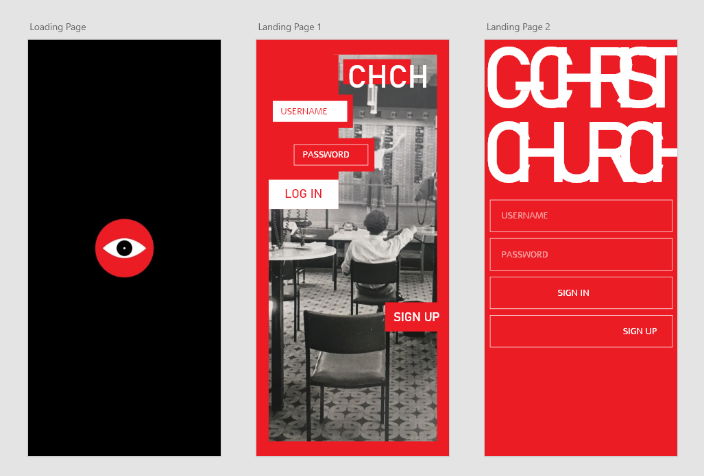
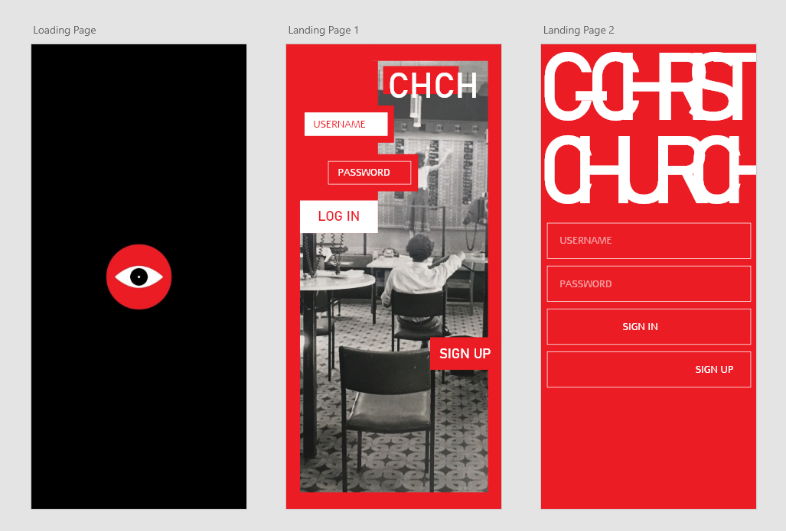

The Goal
We were tasked with creating an app using REACTJS that included create, read, update, and delete functionality. The only requiremenets were that the app included multiple pages.
UX & UI Design
Web Developer
EYE SEE CHCH is an app where users share images from around Christchurch and interact with posts. The target audience is tourists and people living in Christchurch.
The app was created by myself and two other students for our Web & UX Design Diploma. It was created with REACTJS and is a CRUD app.
We were tasked with creating an app using REACTJS that included create, read, update, and delete functionality. The only requiremenets were that the app included multiple pages.
We wanted to create an app that was simple and worked with the resources we had and our time limit of four weeks. We also wanted it to be something we could continue to grow and even get people to use. The idea was to create a photosharing app similar to Instagram based around Christchurch. Users can share their photography, favourite places, and tourists can find places in Christchurch to visit.
One of my team members, John and myself worked on the design. We were inspired by swiss style as it had a very industrious, and street-style-like feel which we felt suited our app.
For the colour palette we went with a simple black and beige theme with red accents. We chose beige to separate ourselves from other apps that typically use white backgrounds, and we chose red because it is one of Christchurch’s colours.
We both created our own designs and then went over them as a team. Afterwards, we used the feedback from the team and the different ideas to collaborate on the final design.
 

I was tasked with designing and building the menu. We knew we wanted a hovering menu that didn’t take the user away from the feed.
As a team, we prefered the second menu design as it was more minimal and unconventional.
We wanted our logo to incorporate an eye to reflect the theme of “seeing” Christchurch. We also wanted to be able to use the eye symbol throughout the app as a button.
For the final design, we implemented more black as it gave a sleeker and more edgy style. We went with a beige background for the feed page because it was different from the usual white background in similar apps. The black and beige worked as perfect backdrops for the red accents. I particularly like how the black and beige colours distinguish the app pre-logged in and post-logged in.
The feed page randomly selects documents from our database every time the page is refreshed. Users can read, update, edit, and delete these posts.
John designed the logos and smiley face illustrations, while I created the icons for the menu. Having our own illustrations and icons for the app helped give the app a brand which made the design stronger and more cohesive.
As graphic designers, and illustrators creating the icons and logos was definatly a highlight of the project for us.

For the final design, we deconstructed the menu further to give the icons their own sections and to better match the menu icon. We made the background of the icons transparent because we felt it looked better aesthetically against the feed. We did not end up creating a categories section due to time.
The menu has five options: home, profile, add, log out, and settings.
To store the posts data, we used MongoDB. We created three collections which were three different categories: plants, places, people. Posts were then added to these collections depending on category.
We built the app using the MERN stack method, which icluded MongoDB, Express, ReactJS and Node.js. These tools allowed us to create a functional CRUD app.
Try the app.